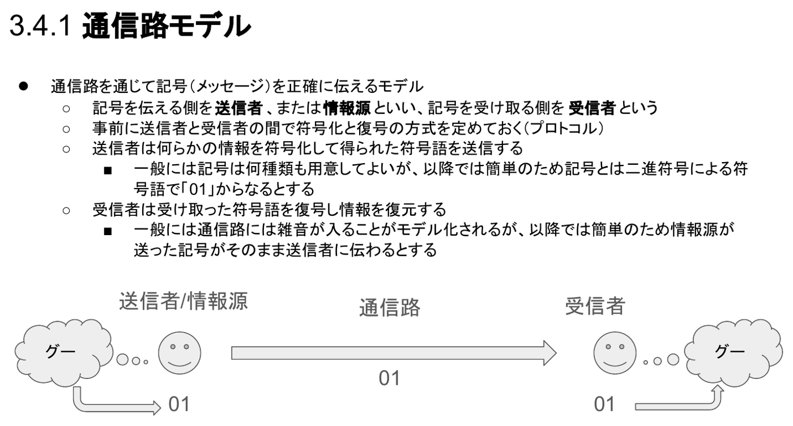
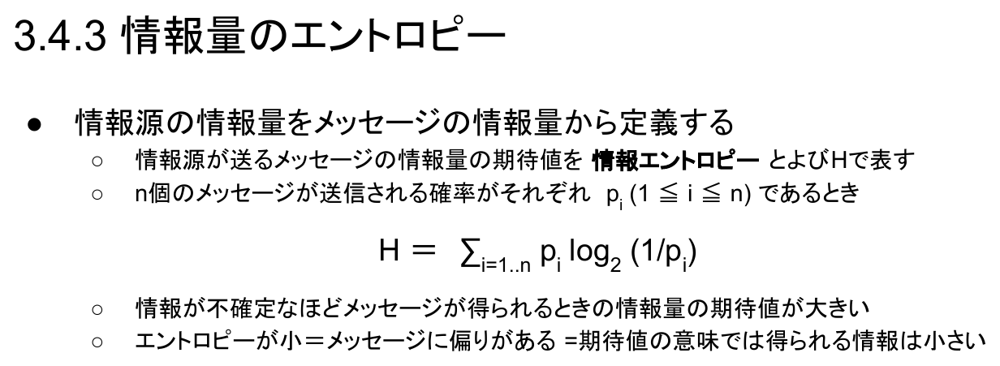
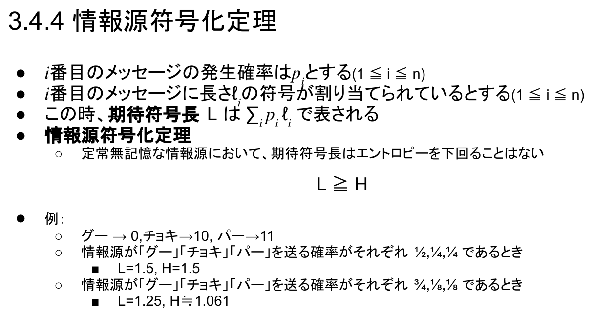

情報｜田中哲郎クラス講義ノート
このページは講義スライドの流れを節単位に組み直し、用語の関係と学習上の要点を説明する。モデル・文字コード・標本化・情報量を中心に、定義だけでなく、なぜ必要か、どのように使うかまで確認する。
本章は「情報をどう表現するか」を主題とする。表現を考えるときは、何を表すか（対象）、何のために表すか（目的）、どうやって表すか（手段）という三つの軸を切り分ける必要がある。対象が数値なのか、文字なのか、画像や音声のような連続量なのかによって、選べる手段は変わってくる。
同じ目的地を伝えるにも手続き的な道案内と宣言的な道案内があるように、同じ情報にも複数の表現手段がある。加えて、デジタル/アナログのどちらで表すか、どれだけの情報量を割くかという軸も表現の選択に関わる。これらは独立した知識ではなく、後続の節（文字コード、標本化、情報量）で扱う具体的な符号化の議論の前提になる。
モデルとは、単純化・抽象化された事物・事象・概念のことである。モデル化とは、実際の事物・事象に対応したモデルを構築する過程をいう。
実際の旅客機をテストする前に、小型模型（モデル）を用いた風洞実験を行う。ここで重要なのは、目的によって構築するモデルの表現形式が異なるということである。風洞実験が目的なら実機と同様の材料でモデル化し、デザイン検討が目的なら加工・修正のしやすい材料でモデル化する。同じ対象でも、目的が変われば「良いモデル」の基準も変わる。
情報表現には受け手側とデザイン側という二つの立場がある。受け手側は情報表現を適切に理解・解釈しなければならず、デザイン側は目的に応じて適切な表現手段を選択しなければならない。情報は解釈・処理されるものであり、特に人間が扱う情報は「解釈」され、機械が扱う情報は「処理」される、という違いも意識しておきたい。
具体的には、①表現の対象（物理的実体、抽象的アイディア、思考の方法、思考の結果など）を明確にすること、②表現の目的（他者への伝達、依頼、自身のアイディアの整理、効率的な問題解決など）を理解すること、③表現の方法を、コストや目的に照らしてより良いものを選択すること、の三点を常に確認する。この三点は、次節以降で具体的な符号化方式を検討する際の共通の判断基準になる。
記号表現とは、事物・事象・心的概念を抽象化したものである。記号には二つの側面がある。記号によって指し示される事物・事象・概念そのもの（例：サービスエリアという場所）と、「記号」そのもの（例：それを表す図記号）である。この二つを区別しないと、「記号の意味」と「記号の形」の議論が混ざってしまう。
ピクトグラム（図記号）は、抽象化された図形によるデザインで、瞬時に表示内容を認識できるという利点を持つ。ただし、ピクトグラムは記号表現とパターン表現が混在した表現であり、パターン表現は常に具体的・直接的であればよいわけではない。ピクトグラムの多くは、次のような修辞法によって成り立っている。
この二つの例は、ピクトグラムが「今も通用する経験」だけでなく「過去の技術の記憶」にも依存し得ることを示している。保存アイコンのように、指し示す対象（フロッピーディスク）が実世界から消えても、記号そのものは慣習として生き残ることがある。
記号表現と、それが指し示す命題との対応付けは恣意的である。○や×による表現が、常に肯定・否定（禁止）に対応づけられるわけではない。例えば、日本の車両通行禁止の標識・禁煙の標識では、斜線を使って禁止や否定を表す。一方、欧州の「すべての車両通行禁止」「二輪車以外の車両通行禁止」の標識は、日本とは異なる図柄の約束事に基づいている。国や地域によって同じ意味を表す図記号の描き方が異なるのは、対応付けが恣意的であることの表れである。
情報表現のデザイナーは、記号の形が「自明に意味を伝える」と思い込まず、受け手側の解釈の枠組みに注意を払う必要がある。国土交通省の資料にある世界の道路標識の比較や、進入禁止標識のような日常的な記号でも、文化的な前提知識なしには正しく解釈できないことがある。
記号の解釈のしかたは、記数法（アラビア数字、漢数字、ローマ数字など）によって異なる。アラビア数字の記数法は10進位取り記数法であり、記号列 $x_nx_{n-1}\cdots x_1$ は $\sum_{i=1}^{n}10^{\,i-1}x_i$ を表す（例：$10^2\times4+10^1\times3+10^0\times2 \to 432$）。より一般に、$N$を底とするN進記数法（N進位取り記数法）では、記号列 $x_nx_{n-1}\cdots x_1{}_{(N)}$ は $\sum_{i=1}^{n}N^{\,i-1}x_i$ を表す（例：$43\to101011_{(2)}$）。計算機科学では2進記数法や16進記数法がしばしば用いられ、16進法では $10\to\mathrm{A}$、$11\to\mathrm{B}$、$15\to\mathrm{F}$ のようにアルファベットで10以上の桁を表す。
小数点として「.」（period）を使い、3桁ごとの整数部分の区切りに「,」（コンマ）を使う書き方は世界共通ではない。実際に、日本のある学会が海外の講演者へ送金した際、金額に「XXX.00」のように小数点以下をつけた（セントのつもりで）ところ、送金先の金融機関がこれを3桁ごとの区切りと解釈し、「0をつけ忘れた」と判断して1000倍の金額を送金してしまう事件が起きた。講演者から払い過ぎた分は返金されたが、その間の為替相場の変動により多額の為替差損が発生した。記数法の約束事は、それを共有していない相手には正しく伝わらないという好例である。
位取り記数法では、表す数が大きく（あるいは小さく）なるほど記号列が長くなりすぎる。そこで、仮数部と指数部に分けて表記する方法が使われる（例：$430000000\to4.3\times10^{9}$、$0.00000043\to4.3\times10^{-9}$）。これは次に述べる浮動小数点表現の考え方の土台になる。
例えば「99」の符号語は01100011であり、その符号長は8ビットである。
対象となる情報すべてに同じ符号長の符号語を割り当てる符号を固定長符号という（これに対し、情報によって符号語の長さが異なる符号を可変長符号という。可変長符号は後の情報源符号化の節で扱う）。0から7までの数値のように、対象となる情報が有限個の非負整数であれば、固定長符号は二進法の表記をそのままビット列とみなすことで構成できる。
$n$ビット使えば、$0$から$2^{n}-1$までの非負整数を対象とする固定長符号が構成できる。8桁の2進数なら0から255まで、32桁の2進数なら0から約$4.3\times10^{9}$まで、64桁の2進数なら0から約$1.8\times10^{19}$まで表現できる。
$n$桁のうち$m$桁を小数部とする表現を固定小数点数という。これは、表す数$x$を$2^{m}$倍して整数として表現するのと同じことである。$k$桁目のビットが$b_k$のとき、この符号は $\sum_{k=0}^{n}2^{\,k-m}b_k$ という数を表す。
8桁のうち4桁を小数とする場合、$2^{1}+2^{0}+2^{-3}=3+\tfrac{1}{8}=3.125$ は 0011.0010（8ビットの符号語 00110010）と表される。固定小数点数は桁数を固定して割り振るため、表せる値の範囲も精度もあらかじめ限られるという制約がある。
浮動小数点数は、0と1からなる桁（ビット）を32桁使って表すことが多い。符号部（1ビット）・指数部（8ビット）・仮数部（23ビット）に分けて表現し、仮数と基数のべき乗の形（$1.\text{仮数}\times2^{\text{指数}}$）で数を表す。
符号部0（正の数）、指数部01111011（10進数で123）、仮数部から得られる仮数 $1.10011001100110011001100_{(2)}\approx1.59999990463256835938$ の32ビット表現を考える。指数部の値からバイアス127を引くと指数は $123-127=-4$ となるので、この符号語が表す値は $1.59999990463256835938\times2^{-4}\approx0.1$ である。これは0.1に近いが、厳密な0.1ではない。$\tfrac15$や$\tfrac{1}{10}$のような小数は2進数では無限循環小数になり、有限桁の浮動小数点数では厳密に表現できないためである。
文字を符号として伝える工夫は、計算機が登場する以前から存在した。18世紀の手旗信号は2本の旗の向きによって文字を表現し、1830年代のモールス符号は長点・短点の並び（文字ごとに長短点の個数が異なり、空白が区切りとなる）で文字を表現した。1920年代のテレタイプライタは5個のON/OFFの信号の並び（5ビット、32通り）を用いた。1960年代に登場したASCIIコードは7個のON/OFFの信号の並び（7ビット、128通り）を用い、ほぼ同時期に登場したEBCDICコードとの競争に勝って普及した。
ASCII（American Standard Code for Information Interchange）は、米国におけるアルファベットの符号化方式で、7ビット（2進法7桁）で128文字を表現する。表される文字は、アルファベット（大文字・小文字）、数字、記号、制御文字（テレタイプライタ等への「次の行へ」「一文字訂正」という指示）である。多くの文字はキーボードから変換なしに入力できるが、日本語キーボードでは「\」の代わりに「￥」が入力されるなど、キーボード配列との対応にも各国ごとの違いがある。
文字コードの設計・標準化には、いくつもの制約が絡み合う。過去に符号化された文字は将来も読めるべきである（歴史的性質）。符号は短いほど転送・記録が効率的である。ヨーロッパ語は数十文字で足りるが、漢字は数千文字以上に及ぶ（文字の量の違い）。文字コードはメーカーごと、地域ごとに複数の標準が定められてきた。見た目の類似性、異体字、方言ごとに異なる文字など、文化的には無視できない細かな違いもある。そして、狭いコミュニティだけで使われていた時代から、世界中のコンピュータが通信し、多言語を同時に扱う時代へと状況が変化してきた（国際化）。
文字コードとは、文字と計算機上の符号（数値）を対応づけるための枠組みである。日本語については、過去にJIS・シフトJIS・EUCなど複数の日本語文字コードが混在しており、現在も一部は使われ続けているが、多国語の符号化方式であるUnicodeにほぼ移行した。
解釈の枠組み（文字コード体系）が送信側と受信側で異なると、記号の意味が異なって解釈されてしまう。プログラムが想定するコード体系と実際の符号化方式が食い違うと「文字化け」が起こる。「魑魅魍魎をコメントに入れておくと文字化けしない（＝文字化けに気づきやすい）」という昔ながらの知恵は、この問題への現場対応の一例である。コード体系の標準化・統一化には、歴史的経緯、利害関係、処理の都合、拡張性、文字セットの違いなど、技術以外の困難も多く伴う。
Unicodeは、世界の多くの言語の約137,929文字（2019年時点）を含む文字集合であり、コードは32ビットで、ASCIIと互換性がある。符号化方式には主に次の3方式がある。
メモリ効率の良さから、UTF-8が最も広く使われている。
符号化方式にはいくつかの注意点がある。Han unificationは、中国語・日本語・韓国語の漢字のうち見た目が同じ文字に同じコードを割り当てる方針である（対照的に、英語のAとギリシャ語のAは見た目が似ていても別のコードが割り当てられている）。携帯電話メールの絵文字のように、独自の文字がUnicodeに取り込まれた例もある。さらに、見た目が同じでも違うコードが使われる例（例：G0OGLE.COMの「0」がアルファベットのOではなく数字のゼロである、あるいはwikipediа.orgの「а」がキリル文字である、といったなりすまし）や、アラビア文字などのために用意された「右から左に読む」制御コードを悪用すると、見た目では区別がつかない文字列を作れてしまう問題もある。
ある情報を連続量（アナログ量）として表すことをアナログ表現という。アナログ表現は無限の精度を必要とするため、データの複製は元のデータの近似にしかならず、完全な複製は難しい。これに対し、ある情報を離散的に表すこと（デジタル量）をデジタル表現という。デジタル表現は、情報に対して一定間隔の尺度を導入し、その尺度の値に近似して表現するため、完全な複製が容易であり、圧縮も可能である。計算機上ではすべての情報が0と1のみで表現される。つまり、デジタル量は（アナログ量とは違い）計算機上で原理的に表現できる。
例えば気温の推移を記録する場合、時間軸を標本化し、温度軸を量子化する。量子化も標本化も、段階を多くすればより詳細な情報になる。
標本化定理は、求められる情報の精度から、標本化に必要な間隔を決める定理である。標本化の対象となるアナログ関数$F$が、周波数の異なる複数の周期関数の重ね合わせで表現できることを基礎とする。$F$を表すために必要な周期関数（周期$T$、周波数$\omega=1/T$）の周波数が$W$以下であるとすると、$1/2W$の間隔で標本化すれば、標本化された値から元のアナログ関数$F$を完全に復元できる。標本化の間隔を$t$とすると、標本化周波数$1/t$の半分$1/2t$を、標本間隔$t$のナイキスト周波数と呼ぶ。
標本化周波数が$W$のときに正確に記録できるのは、$W/2$（＝ナイキスト周波数）までの成分である。音楽であればどれだけ高い音が録音できるか、画像であればどれだけ細かな縞模様が記録できるかを、この値が決める。ナイキスト周波数以上の成分はエイリアシングを引き起こす。画像であれば本来無い縞模様（モアレ）が見え、音声であれば本来無い信号（ノイズ）になる。
音楽CDの標本化は、人間の鑑賞が目的なので、聴覚で知覚できない高い周波数まで記録する必要はない。実際の標本化の基準は44.1kHzで、$1/44100=0.0000227$秒間隔で音の情報を標本化し、ナイキスト周波数は22.05kHzになる。適切に細かい標本間隔を用いれば、アナログ量を欠損なくデジタル量に変換できる。
一方、電話の標本化は会話をするのが目的であるため、標本化周波数8kHz（ナイキスト周波数4kHz）と、CDよりずっと粗い。ピアノの最高音は4.186kHz、オペラ「魔笛」の「夜の女王のアリア」の最高音は1.396kHzであり、いずれも通常の会話の周波数帯域より高いが、電話で「会話」する分には4kHzのナイキスト周波数でも実用上支障がない、という設計判断が見える。
周波数解析とは、与えられた信号を個々の異なる周波数成分の波に分解することをいう。画像を低周波成分から高周波成分へ順に足し合わせていくと、元の画像を復元するために必要な情報量がどの程度かが分かり、データ量を圧縮できる。この考え方は音声や画像などの情報表現と圧縮に用いられ、代表的な画像ファイルフォーマットであるJPEGで採用されている。
ここからは、1948年にシャノンによって発表され、現代の情報理論の礎となった枠組みを扱う。通信（コミュニケーション）とは、一つのメカニズムが、それによって他のメカニズムに影響を与える手順を含むものである。通信・コミュニケーションには、次の3つの問題があるとされる。
通信の数学的理論（情報理論）は、このうち技術的問題のみを扱う。つまり、メッセージの「意味」や、それが相手にどう作用するかは対象にせず、記号をいかに正確に、効率よく伝えるかだけを問題にする。この割り切りによって、情報量やエントロピーという、意味内容に依存しない定量的な概念を定義できるようになる。
通信路を通じて記号（メッセージ）を正確に伝えるモデルを考える。記号を伝える側を送信者（または情報源）といい、記号を受け取る側を受信者という。送信者と受信者の間では、事前に符号化と復号の方式（プロトコル）を定めておく。送信者は何らかの情報を符号化して得られた符号語を送信し、受信者は受け取った符号語を復号して情報を復元する。

一般には記号は何種類あってもよいが、以降では簡単のため、記号は二進符号による符号語（「01」のような0と1の列）からなるものとする。また、一般には通信路に雑音が入ることをモデル化するが、まずは雑音がなく、情報源が送った記号がそのまま受信者に伝わる場合を考える（雑音がある場合は8節の最後で改めて扱う）。
メッセージ（＝送りたい情報）が確率論的に独立であると仮定すると、通信路モデルは確率的なモデルとみなせる。このとき、情報源は定常無記憶な情報源と呼ばれる。例えば、時刻$t$で情報源が「グー」「チョキ」「パー」を伝える確率がそれぞれ$\tfrac12,\tfrac14,\tfrac14$である、という設定がこれにあたる（このような確率的なモデルの一般論は第6章「6.2.2 確率的なモデル」も参照）。定常無記憶であるという仮定のもとで、次節以降の情報量・エントロピー・情報源符号化定理が成り立つ。
メッセージの持つ情報を定量化した「情報量」を定義したい。定義にあたっては、次の性質を満たしてほしいという要請がある。
事象が起きる確率を$p_A,p_B$として、微分可能な関数$f$が、非負性 $f(p_A)\gt0$、単調性 $p_A\lt p_B\Rightarrow f(p_A)\gt f(p_B)$、加法性 $f(p_A)+f(p_B)=f(p_Ap_B)$、単位の調整 $f(\tfrac12)=1$ をすべて満たすとすると、$f(x)=-\log_2x$ に限られる。加法性の条件 $f(p_Ap_B)=f(p_A)+f(p_B)$ は「積を和に変える」性質であり、これを満たす（微分可能な）関数は対数関数に限られる。底を2に取るのは、$f(\tfrac12)=1$、すなわち「確率$\tfrac12$の事象の情報量を1（＝1ビット）とする」という単位の取り方に対応する。
確率$p$で起きる事象を伝えるための情報量（自己情報量）は $I(p)=-\log_2p$ ビットである。
コインを投げたら表だった：$-\log_2\tfrac12=1$ ビット。さいころを投げたら3だった：$-\log_2\tfrac16=1+\log_2 3\approx2.58$ ビット。コインを10枚投げたらすべて表だった：$-\log_2\tfrac{1}{1024}=10$ ビット。最後の例は $1+1+1+\cdots+1=10$（10回分の1ビットの和）とも書け、独立な10回のコイン投げの情報量が単純に加算されることを示している（情報の加法性）。
情報源の情報量は、メッセージ一つひとつの情報量ではなく、情報源が送るメッセージの情報量の期待値として定義する。これを情報エントロピーといい、$H$で表す。$n$個のメッセージが送信される確率がそれぞれ$p_i$（$1\le i\le n$）であるとき、

情報が不確定であるほど、メッセージが得られるときの情報量の期待値は大きくなる。逆に、エントロピーが小さいということは、メッセージに偏りがあり、期待値の意味では得られる情報が小さいということである。
情報源が「グー」「チョキ」「パー」を送る確率がそれぞれ$\tfrac12,\tfrac14,\tfrac14$であるとき、$H=\tfrac12\log_2 2+\tfrac14\log_2 4+\tfrac14\log_2 4=0.5+0.5+0.5=1.5$ ビット。一方、確率がそれぞれ$\tfrac34,\tfrac18,\tfrac18$と偏っているとき、$H'=\tfrac34\log_2\tfrac43+\tfrac18\log_2 8+\tfrac18\log_2 8\approx1.061$ ビット。確率が偏った$H'$の方が、均等に近い$H$より小さくなっている。これは「エントロピーが小さい＝偏りがある」ことの具体例である。
ある国で1日に「犬が人間を噛む」事件が起きる確率が10%、「人間が犬を噛む」事件が起きる確率が0.01%であるとする。後者は圧倒的に確率が低いので、自己情報量 $-\log_2p$ は「人間が犬を噛む」というメッセージの方が大きく、情報の価値（情報量）はこちらの方が大きい。一方、新聞のコーナーとして「毎日どちらが起きたか」を伝える場合に重要なのは、日々の報道の情報量の期待値、つまりエントロピーである。「犬が人間を噛む」かどうかを伝えるコーナーは、確率がほぼ五分五分に近い事象（10%対90%）についての報道であり、「人間が犬を噛む」かどうかを伝えるコーナーは、ほぼ常に「起きなかった」という予測どおりの結果になる報道である。したがって、「犬が人間を噛む」を伝えるコーナーの方がエントロピーが大きい。個々のメッセージの情報量の大小と、情報源全体のエントロピーの大小は、必ずしも同じ側に軍配が上がるわけではないことに注意する。
ここまでの例は、情報源が定常無記憶である場合、すなわち各時刻の記号が独立に決まる場合を扱ってきた。しかし、実際には前の記号が次の記号に影響することがある。じゃんけんの手を例に取り、今回の手$X_t$が前回の手$X_{t-1}$に依存する場合を考える。
前回の手$X_{t-1}$と今回の手$X_t$の同時確率が、前回・今回とも同じ手なら$\tfrac16$、1手違いならそれぞれ$\tfrac{1}{12}$になるように与えられているとする（前回グーなら、今回グー$\tfrac16$・チョキ$\tfrac{1}{12}$・パー$\tfrac{1}{12}$、以下同様に対称）。このとき周辺確率は$X_t$がグー・チョキ・パーいずれも$\tfrac13$ずつになるので、$X_{t-1}$を知らないときの$X_t$のエントロピーは $H=\tfrac13\log_2 3+\tfrac13\log_2 3+\tfrac13\log_2 3=\log_2 3\approx1.585$ ビット。一方、$X_{t-1}$の値（例えばグー）を知っているとき、条件付き確率は$\tfrac12,\tfrac14,\tfrac14$になるので、条件付きエントロピーは $H'=\tfrac12\log_2 2+\tfrac14\log_2 4+\tfrac14\log_2 4=1.5$ ビット。$H$と$H'$の差 $H-H'\approx0.085$ ビットを、$X_{t-1}$と$X_t$の相互情報量という。
条件付きエントロピー$H'$は、前回の手を知った後でも今回の手にどれだけ不確実性が残るかを表す。相互情報量$H-H'$は、前回の手を知ることによって、今回の手の不確実性がどれだけ減ったかを表す量である。相互情報量が0より大きいということは、前回の手が今回の手についての情報を（部分的にせよ）持っている、すなわち情報源が定常無記憶ではないことを意味する。2022年度共通大問3Aのように、確率の更新（＝条件付き確率への書き換え）を追いながら自己情報量・平均情報量を計算させる出題は、この考え方を土台にしている。
$i$番目のメッセージの発生確率を$p_i$とし、$i$番目のメッセージに長さ$\ell_i$の符号が割り当てられているとする（$1\le i\le n$）。このとき、期待符号長$L$は次のように定義される。
定常無記憶な情報源において、期待符号長はエントロピーを下回ることはない。
つまり、どれほど工夫して符号語の長さを割り振っても、平均符号長をエントロピー未満に縮めることはできない。逆にいえば、エントロピーは「その情報源を平均して符号化するのに理論上必要な最小のビット数」を与える下限である。

グー・チョキ・パーに、それぞれ長さ1・2・2の符号語0・10・11を割り当てる（0で始まる符号語は0だけなので、10や11を0と読み違えることはない＝この符号は接頭語符号になっている）。情報源が「グー」「チョキ」「パー」を送る確率がそれぞれ$\tfrac12,\tfrac14,\tfrac14$であるとき、$L=\tfrac12\times1+\tfrac14\times2+\tfrac14\times2=1.5$、$H=1.5$ なので $L=H$、すなわちこの符号は理論的な下限を達成する最適な符号である。一方、同じ符号を確率$\tfrac34,\tfrac18,\tfrac18$の情報源に使うと、$L=\tfrac34\times1+\tfrac18\times2+\tfrac18\times2=1.25$、$H\approx1.061$ となり、$L>H$ で下限には届かない（＝この確率分布に対しては、発生確率3/4のグーにもっと短い符号語を割り当てる余地がある）。
発生確率の高い記号ほど短い符号語を割り当てる、という考え方を具体的な手続きに落とし込んだものがハフマン符号である。発生確率が最も低い2つの記号を1つにまとめて木を作る、という操作を確率の低い側から繰り返して符号木を構成すると、各記号への符号語の割り当てが決まる。上の「グー→0、チョキ→10、パー→11」という符号は、確率$\tfrac12,\tfrac14,\tfrac14$の情報源に対してハフマン符号の手続きを適用した結果とも一致する。2021年度共通大問2ではグレイ符号や平均符号長・情報源符号化定理が、2025年度共通問題Bでは固定長符号とハフマン符号の構成手順が、有限状態機械と関連づけて出題されている。
ここまでは、通信路に雑音がなく、送信した符号語がそのまま受信者に届く場合を扱ってきた。実際の通信路には雑音が入ることがあり、雑音が確率的に発生して0と1が反転すると、送信した符号語「01」が受信側では「00」のように異なるビット列として届いてしまうことがある。
誤り検出・誤り訂正の具体的な仕組みは、通信路や符号の冗長性の設計に関わる話題であり、次章以降で扱う情報の伝達・通信の議論につながっていく。
ある情報源がA・B・C・Dの4種類のメッセージを、それぞれ確率$\tfrac12,\tfrac14,\tfrac18,\tfrac18$で送るとする。各メッセージの自己情報量と、情報源のエントロピー$H$を求めよ。
自己情報量は、Aが$-\log_2\tfrac12=1$ビット、Bが$-\log_2\tfrac14=2$ビット、Cが$-\log_2\tfrac18=3$ビット、Dが$-\log_2\tfrac18=3$ビット。エントロピーは $H=\tfrac12\times1+\tfrac14\times2+\tfrac18\times3+\tfrac18\times3=0.5+0.5+0.375+0.375=1.75$ ビット。
予想問題1の情報源に対して、A→0、B→10、C→110、D→111という符号を割り当てた。期待符号長$L$を求め、情報源符号化定理 $L\ge H$ が成り立っているか確認せよ。
$L=\tfrac12\times1+\tfrac14\times2+\tfrac18\times3+\tfrac18\times3=0.5+0.5+0.375+0.375=1.75$。予想問題1で求めた$H=1.75$と一致するので、$L=H$となり、この符号は理論的な下限を達成する最適な符号（ハフマン符号）である。
ある楽器の音を、人間の可聴域の上限とされる20kHzまで正確に記録したい。標本化周波数を何kHz以上にする必要があるか、標本化定理から答えよ。
標本化周波数$W$のとき、正確に記録できるのはナイキスト周波数$W/2$までの成分である。20kHzまで記録したいので$W/2\ge20$kHz、すなわち標本化周波数$W$は40kHz以上必要である（実際の音楽CDの標本化周波数44.1kHzは、この理論的な下限に余裕を持たせた値になっている）。
ASCIIコードは何ビットで何文字を表現できるか。また、Unicodeの符号化方式のうち、固定長符号であるものを一つ答えよ。
ASCIIコードは7ビットで$2^7=128$文字を表現する。Unicodeの符号化方式のうち固定長符号なのはUTF-32である（UTF-8・UTF-16は可変長符号）。
用語を単独で暗記するのでなく、題材のどこにその概念が現れ、どの条件を根拠に判断するかを説明できるようにする。
モデル・文字コード・標本化・情報量は独立した暗記事項ではなく、情報を表現し、処理し、伝え、社会で安全に利用するための一連の考え方としてつながっている。各節の太字語を自分の言葉で説明できるか確認しよう。